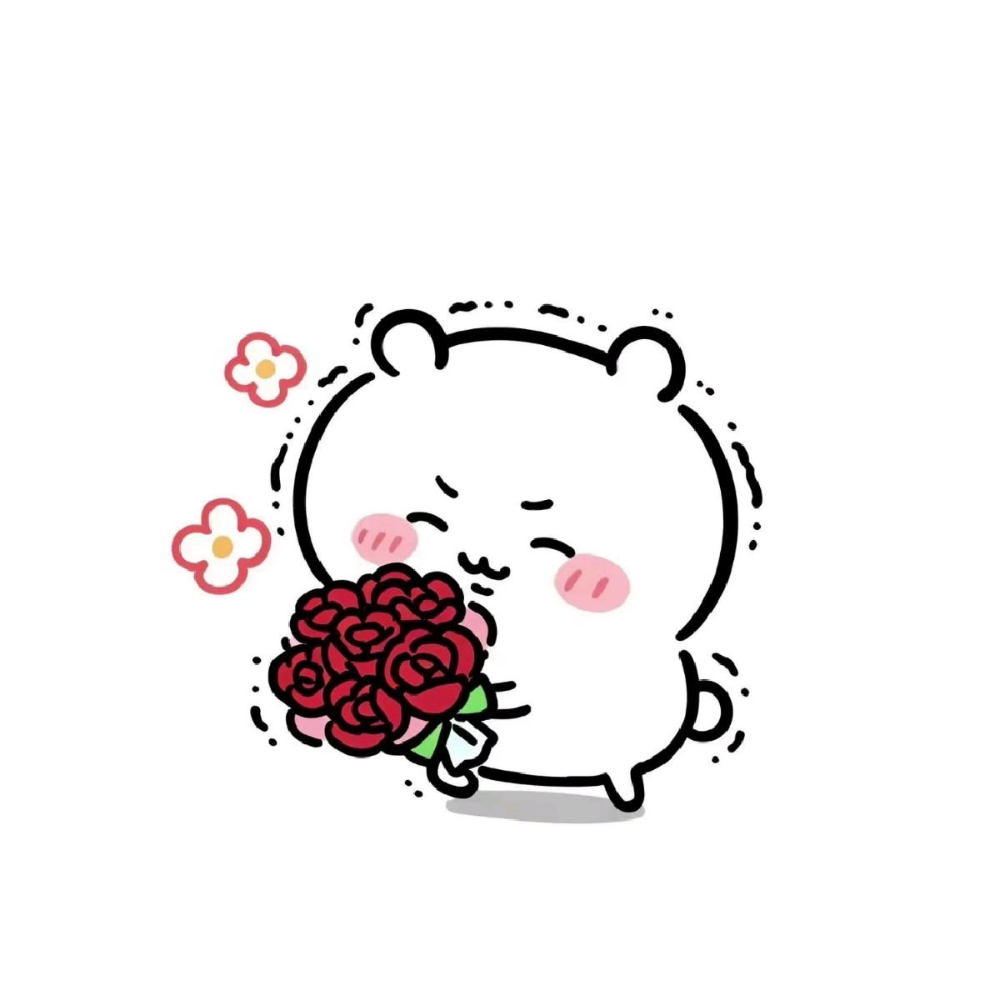
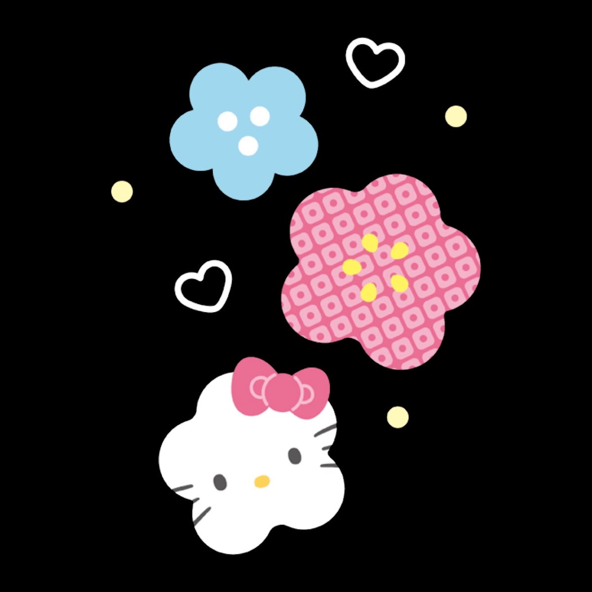
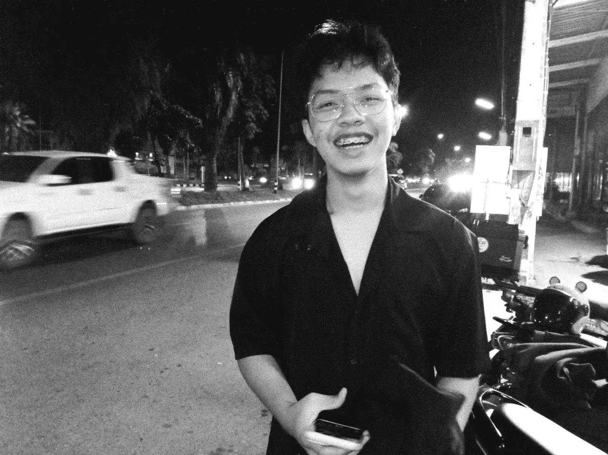
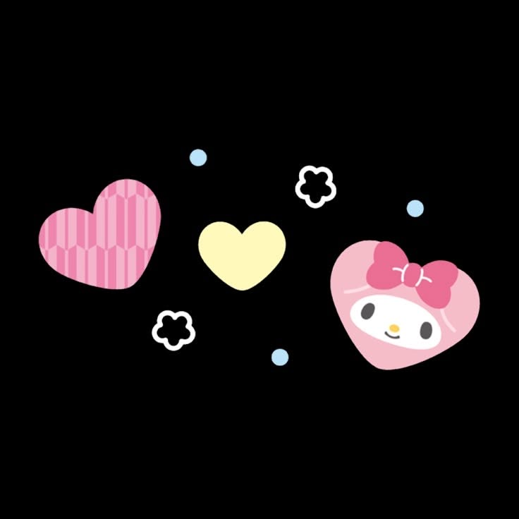
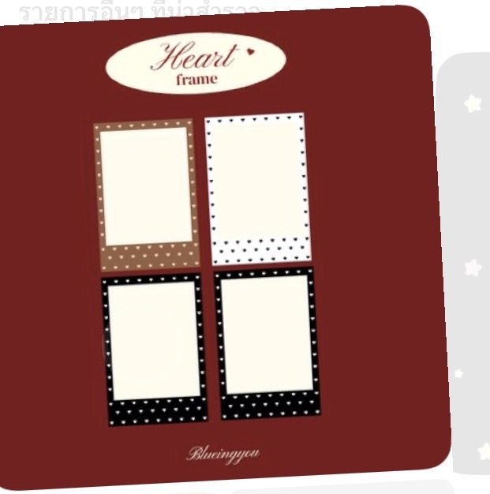

SIDE A · 01 · OUR BEGINNING
ก่อนจะเป็น “เรา”




730 วันของเรา — วันที่ดี วันที่วุ่นวาย และทุกอย่างที่อยู่ระหว่างนั้น





หนูชอบที่แกมาบ่นให้หนูฟัง หนูแบบรู้สึกว่าเป็นเซฟโซนให้กับแกได้ ถึงจะเป็นเรื่องเล็กๆหน่อย หนูก็รู้สึกดีใจ น่ารักดีค่ะคนสวย
หนูน่ะนะรู้สึกว่าแกอ้นอ้อนน่ารักๆ ไหนลองทำเสียงหมาเด็ก หอมกลิ่นหมาเด็ก มาจุ๊บนี่มา ใจคนหล่อละลายน่ารักจริงๆอะคนสวย
หนูชอบเวลาที่เราคุยเรื่องความฝันของกันและกันหรือว่าเรื่องราวต่างๆ หนูรู้สึกว่ามันทำให้หนูได้เรียนรู้ในตัวแกจากการเล่าเรื่อง อะไรหลายๆอย่าง แล้วหนูก็ชอบเพราะว่าเหมือนเรากำลังรับฟังกันเต็มที่ แลกเปลี่ยนความคิดเห็น น่ารักน่ารัก
จริงๆคือหนูอะเป็นคนติดสกินชิพมากกกกกกกกกกกกกกกกก แต่ก็นะหนูก็มีมาดเนาะ ก็เขินๆแต่ก็จะรู้สึกดีเวลาสกอนชิพ แต่ว่าก็เริ่มก่อนแบบกวนกวน จริงๆก็ชอบอ้อนคนแต่ว่าก็นะมันก้ช็เขินเนาะ ยังไงดีอะ
ตอนนั้นน่ะนะที่แบบไปคุยกับแกเพราะว่าแบบแกดูน่าแกล้งเนาะ เหมือนหมูโดนต้อนยังไงดีอะ แต่จริงๆช่วงนั้นเป็นเป็นช่วงแรกๆที่หนูฝึกเฟรนลี่ ปกติก็อยู่เงียบๆขี้อายด้วย แต่ก็อยากจะลองดูสักครั้งในชีวิต ยังไงดีเฟรนลี่จนได้ดี
จริงๆไม่เคยโดนใครขอเป็นแฟนต่อหน้าเลย ปกติก็จะแบบผ่านแชทไรงี้ ก็มีความรู้สึกอยู่ในใจว่าต้องมีอะไร แอบเขินเล็กๆ ไอเราก็หล่ออะเนาะ น่ารักจริงเชียวคนสวย มาจุ๊บนี่มา
มันมีหลายเรื่องราวมากมายเลย แล้วถ้าให้หนูบอกก็คงจะรู้สึกว่าเราก็โตกันจากวันแรกที่เรารู้จักกันมากพอสมควร แต่ว่าหนูก็สึกดีที่ยังมีแกอยู่ตอนนี้ หนูได้เรียนรู้อะไรหลายๆเยอะมาก แล้วมันก็ทำให้หนูฝึกอะไรหลายๆอย่างเหมือนกัน มันเป็นเรื่องที่ดีอะ ไม่ได้รู้สึกแย่เลย ก็อยู่ด้วยกันไปแบบนี้เท่าที่พวกเราจะทำได้นะ
แบบหนูเป็นคนคิดมาก แต่จริงๆหลายๆเรื่องราวก็ทำให้หนูได้เรียนรู้อะ แล้วมันก็ทำให้ความสัมพันธ์มันไม่ตึงขนาดนั้นเท่าไหร่
แต่ก่อนหนูจะกลัว หนูคิดว่าตัวเองงี่เง่าแล้วหาเหตุผลมาซัพพอร์ตทุกคนตลอดเลย พออยู่ในจุดๆนึง ที่ตกตะกอนได้แล้วหนูก็รู้สึกว่า หนูก็สำคัญไม่แพ้กับใครที่หนูแคร์เลย แล้วมันก็ไม่ได้เป็นเรื่องที่แย่ มันดีด้วยซ้ำเราจะได้ช่วยกันแก้ไขปัญหา
จริงๆหนูเคยคิดว่าหนูอะพูดดีแล้วนะ อธิบายดีแล้ว จนเรามาตึงๆกันล่าสุดแล้วหนูคุยกับแกหนูรู้สึกว่า หนูเจอประโยคแบบนี้ตลอดเช่น ก็ปกติของพี่ ก็แล้วแต่แกอะ ตามนั้น อะไรประมาณนี้ มันทำให้หนูคิดว่าหรือว่าคำพูดของหนูมันไปทำให้แกรู้สึกว่าหนูกำลังตัดสินแกอยู่น่ะนะ ทั้งๆที่จริงๆหนูอยากให้แกเข้าใจความรู้สึกหนู อยากให้แกโอ๋ แล้วค่อยบอกเหตุผล หนูรู้สึกเหมือนโดนโอบกอดทางใจ อ้อนอ้อน หนูเลยลองไปปรับคำพูดใหม่ หนูก็ไม่รู้ว่าตอนนี้มันโอเคมั้ย แต่หนูก็จะพยายามทำให้เต็มที่
ตอบคำถามดูว่าแกจำเรื่องของหนูได้แค่ไหน ♡
“ไม่ว่าอะไรจะเกิดขึ้นต่อจากนี้ หนูหวังว่าเราจะยังกลับมาหาสิ่งเล็ก ๆ ที่ทำให้เรายิ้มได้ และค่อย ๆ เติบโตในแบบของตัวเองไปด้วยกัน”